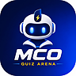

Un live qui ressemble à un vrai produit.
QR code, projection dédiée, réponse privée côté professeur, télécommande et classement en temps réel.
LIVE
CQ98F34 connectés
MCO Quiz ArenaNCR Solutions • BTS MCOLive, progression, fiches, entraînement et pilotage pédagogique dans une expérience pensée pour le BTS MCO.
QR code, projection dédiée, réponse privée côté professeur, télécommande et classement en temps réel.
Leçon suivante, progression, fiches et avatar au même endroit.
Repère ce qui coince et les élèves qui ont besoin de toi.
Définitions, méthodes, formules et pièges BTS accessibles au bon moment.